주택관리사보-1차 (2009-09-20 기출문제)
1과목: 민법
1. 민법의 법원(法源)에 관한 설명으로 옳은 것은? (다툼이 있으면 판례에 의함)
- 대통령의 긴급명령이 민사에 관한 것이면 민법의 법원이 될 수 있다.
- 국제조약이나 일반적으로 승인된 국제법규는 민사에 관한 것이라도 민법의 법원이 될 수 없다.
- 대법원규칙은 민사에 관한 것이라도 민법의 법원이 될 수 없다.
- 헌법재판소의 결정은 민사에 관한 것이라도 민법의 법원이 될 수 없다.
- 관습법도 민법의 법원이며, 판례가 인정한 관습법상의 권리로 분묘기지권, 관습상의 법정지상권, 온천권을 들 수 있다.
(정답률: 40%)

2. 민법상 권리능력에 관한 설명으로 옳지 않은 것은? (다툼이 있으면 판례에 의함)
- 자연인의 권리능력은 사망으로만 소멸한다.
- 자연인의 권리능력은 다른 사람에게 양도하거나 포기할 수 없다.
- 자연인은 생존한 동안 성별, 연령, 직업을 묻지 않고 평등하게 권리능력을 갖는다.
- 자연인은 출생으로 권리능력을 취득하지만, 예외적으로 태아가 살아서 출생하지 못한 경우에도 권리능력을 가지는 경우가 있다.
- 법인의 권리능력은 법인의 성질, 법률의 규정, 정관으로 정한 목적의 범위에 의해 제한된다.
(정답률: 40%)
3. 처(妻) 丙이 있는 甲(50세)은 乙녀(19세)와 첩(妾)계약을 하고, 아파트 한 채와 매달 생활비로 300만원을 주기로 하였다. 그 후 甲은 아파트의 소유권을 乙 명의로 이전하고 乙과 6월간 동거하면서 2월분의 생활비만 지급하였다. 이에 관한 설명으로 옳은 것은? (다툼이 있으면 판례에 의함)
- 甲은 첩계약을 취소하고 생활비 지급을 거부할 수 있다.
- 丙은 첩계약의 무효를 주장할 수 없다.
- 甲은 이미 지급한 생활비의 반환을 청구할 수 있다.
- 乙은 첩계약을 취소하지 못한다.
- 甲은 소유권에 기한 아파트의 반환을 청구할 수 없다.
(정답률: 60%)
4. 동산소유권양도의 공시방법으로서 인도에 해당되지 않는 것은?
- 현실의 인도
- 간이인도
- 혼동
- 점유개정
- 목적물반환청구권의 양도
(정답률: 40%)
5. 주물과 종물에 관한 설명으로 옳지 않은 것을 모두 고른 것은? (다툼이 있으면 판례에 의함)
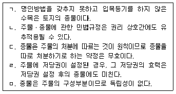
- ㄱ, ㄴ, ㄹ
- ㄱ, ㄷ, ㄹ
- ㄱ, ㄷ, ㅁ
- ㄴ, ㄷ, ㅁ
- ㄴ, ㄹ, ㅁ
(정답률: 67%)
6. 법인의 대표기관인 것은?
- 감사
- 이사회
- 사원총회
- 이사의 임의대리인
- 이사의 직무대행자
(정답률: 알수없음)
7. 대리행위에 관한 설명으로 옳은 것은? (다툼이 있으면 판례에 의함)
- 대리인이 법률행위를 하면서 본인을 위한 것임을 표시하지 아니한 경우, 그 행위는 언제나 자기를 위한 것으로 본다.
- 대리인은 본인과의 사이에서 대리인과 상대방의 지위를 언제나 동시에 가질 수 없다.
- 대리행위의 하자로 인해 취소권이 발생한 경우, 그 취소권은 대리인에게 귀속된다.
- 임의대리인이 본인의 지시에 좇아 대리행위를 한 경우, 본인은 자기가 알고 있는 사정에 관하여 대리인의 부지(不知)를 주장하지 못한다.
- 상대방이 본인을 강박하여 대리인과 법률행위를 한 경우, 본인은 대리행위를 취소할 수 있다.
(정답률: 40%)
8. 법률행위의 무효와 취소에 관한 설명으로 옳지 않은 것은? (다툼이 있으면 판례에 의함)
- 취소권은 형성권으로서 취소권자가 단독으로 행사할 수 있다.
- 법률행위의 무효로 인하여 쌍방이 부당이득반환의무를 부담하는 경우, 쌍방의 의무는 동시이행관계이다.
- 법률행위의 일부분이 무효인 때에는 나머지 부분은 원칙적으로 유효하다.
- 법률행위가 취소되어 무효가 되었더라도 무효행위의 추인요건을 갖춘 경우, 이를 추인할 수 있다.
- 법률행위가 무효이더라도 선의의 제3자에게 무효를 주장할 수 없는 경우가 있다.
(정답률: 알수없음)
9. 법인의 이사에 관한 설명으로 옳지 않은 것은? (다툼이 있으면 판례에 의함)
- 임시이사는 법인의 대표기관으로서 사원총회를 소집할 권한이 있다.
- 이사가 여러 명인 경우, 정관에 달리 정한 바가 없으면 이사는 법인사무에 관하여 각자 법인을 대표한다.
- 이사가 없거나 결원이 있어 손해가 생길 염려가 있는 때에는 법원은 이해관계인이나 검사의 청구에 의하여 임시이사를 선임하여야 한다.
- 이사는 법인에 대한 일방적인 의사표시로 사임할 수 없고, 이사회의 결의나 관할관청의 승인이 있어야 한다.
- 이사는 정관 또는 총회의 결의로 금지하지 아니한 사항에 한하여 타인으로 하여금 특정한 행위를 대리하게 할 수 있는데, 이때 대리인은 법인의 대리인이다.
(정답률: 알수없음)
10. 의사표시에 관한 설명으로 옳은 것은? (다툼이 있으면 판례에 의함)
- 착오를 이유로 법률행위를 취소하기 위해서는 상대방이 표의자의 착오를 알았거나 알 수 있었어야 한다.
- 강박의 정도가 심하여 표의자의 의사결정의 자유가 완전히 박탈된 상태에서 한 의사표시는 무효이다.
- 통정허위표시의 무효로 대항할 수 없는 제3자에는 허위표시를 한 당사자의 상속인도 포함된다.
- 배우가 무대에서 관객에게 행한 대사는 진의 아닌 의사표시이지만 무효이다.
- 사기나 강박에 의한 의사표시는 의사와 표시의 불일치가 있는 것이다.
(정답률: 60%)
11. 소멸시효의 중단에 관한 설명으로 옳은 것은? (다툼이 있으면 판례에 의함)
- 가압류가 법률의 규정에 따르지 않아 취소된 때에도 시효중단의 효력이 있다.
- 채권자가 확정판결에 기한 채권의 실현을 위해 민사집행법상의 재산명시신청을 하고 그 결정이 채무자에게 송달된 경우, 시효중단사유인 최고로서의 효력이 있다.
- 보증채무에 대한 소멸시효가 중단되면 주채무에 대한 소멸시효도 중단되는 것이 원칙이다.
- 제소전화해의 신청을 받은 법원이 화해를 권고하기 위해 당사자를 소환하였으나 화해가 성립되지 않은 경우, 즉시 소를 제기하지 않으면 시효중단의 효력이 없다.
- 시효중단의 효력은 시효중단에 관여한 당사자로부터 중단의 효과가 생긴 권리를 포괄승계한 자에게는 미치지만, 특정승계한 자에게는 미치지 않는다.
(정답률: 알수없음)
12. 제3자를 위한 계약에 관한 설명으로 옳지 않은 것은?
- 제3자의 권리는 제3자가 채무자에 대하여 계약의 이익을 받을 의사를 표시한 때에 생긴다.
- 채무자는 상당한 기간을 정하여 계약 이익의 향수 여부의 확답을 제3자에게 최고할 수 있다.
- 채무자가 상당한 기간을 정하여 계약 이익의 향수 여부의 확답을 제3자에게 최고하였으나 그 기간 내에 확답을 받지 못한 때에는 거절한 것으로 본다.
- 채무자는 계약에 기한 항변으로 계약의 이익을 받을 제3자에게 대항할 수 없다.
- 제3자의 권리가 생긴 후에는 계약당사자는 이를 변경 또는 소멸시킬 수 없다.
(정답률: 28%)
13. 권리의 충돌과 경합에 관한 설명으로 옳지 않은 것은? (다툼이 있으면 판례에 의함)
- 전세목적물이 전세권자의 고의로 멸실된 경우에 소유자인 전세권설정자는 전세권자에게 채무불이행에 기한 손해배상청구권과 불법행위에 기한 손해배상청구권을 가지며, 양자는 청구권경합의 관계에 있다.
- 하나의 생활사실이 여러 개의 법규의 요건을 충족하여 동일한 목적을 가지는 여러 개의 권리가 발생하는 경우는 권리의 경합이다.
- 공무원의 직무상 불법행위책임에 대하여 국가배상법과 민법의 규정이 경합하는 경우 전자만이 적용된다.
- 임대차가 종료하면 임대인인 소유자는 임차인에게 소유권에 기하여 목적물의 반환을 청구할 수 있을 뿐이다.
- 토지에 대하여 지상권과 사용대차권이 충돌하는 경우 권리 성립의 선후에 관계없이 지상권이 우선한다.
(정답률: 알수없음)
14. 임의대리에 관한 설명으로 옳은 것은? (다툼이 있으면 판례에 의함)
- 임의대리권의 발생원인인 수권행위의 하자 유무는 대리인을 기준으로 판단한다.
- 통상의 임의대리권은 상대방의 의사표시를 수령하는 대리권을 포함하지 않는다.
- 한정치산자가 대리인이 된 후 금치산선고를 받은 때에는 대리권은 당연히 소멸한다.
- 매매계약을 체결할 대리권을 수여받은 대리인은 중도금 등을 수령할 권한이 없는 것이 일반적이다.
- 대리권의 범위가 불분명한 경우에 대리인은 제한 없이 개량행위를 할 수 있다.
(정답률: 알수없음)
15. 甲이 등산을 갔다가 생사불명이 되어 실종선고가 내려졌다. 이후 처(妻) 乙은 甲소유의 부동산을 단독상속하였다. 이에 관한 설명으로 옳지 않은 것은?
- 甲은 최후의 소식이 있었던 때에 사망한 것으로 본다.
- 乙이 부동산을 丙에게 처분한 후 甲이 생환하여 실종선고가 취소된 경우, 乙과 丙이 모두 선의였다면 丙은 취득한 부동산을 甲에게 반환할 필요가 없다.
- 甲이 생환하여 실종선고가 취소된 경우, 선의의 乙은 상속받은 부동산에 대하여 이익이 현존하는 한도에서 甲에게 반환하여야 한다.
- 甲이 생환하여 실종선고가 취소된 경우, 실종선고는 소급하여 무효로 된다.
- 甲에 대한 실종선고의 효력은 甲의 종래의 주소 또는 거소를 중심으로 하는 사법적(私法的) 법률관계에만 미친다.
(정답률: 50%)
16. 사기나 강박에 의한 의사표시에 관한 설명으로 옳지 않은 것은? (다툼이 있으면 판례에 의함)
- 사기를 당한 자가 의사표시를 취소하지 않더라도 그 사기가 형법상 범죄행위가 되면 그 의사표시는 무효이다.
- 사기나 강박을 당한 자가 의사표시를 취소하더라도 그 취소는 선의의 제3자에게 대항할 수 없다.
- 제3자의 사기나 강박으로 인해 상대방 없는 의사표시를 한 경우, 표의자는 언제든지 그 의사표시를 취소할 수 있다.
- 대리인이 상대방을 기망한 경우, 본인이 그 사실을 알았거나 알 수 있었느냐에 상관없이 상대방은 그 의사표시를 취소할 수 있다.
- 보증계약에서 주채무자가 보증인을 속인 경우, 채권자가 이러한 사실을 알았거나 알 수 있었을 때에 한하여 보증인은 보증계약을 취소할 수 있다.
(정답률: 알수없음)
17. 재판상으로만 행사할 수 있는 형성권은? (다툼이 있으면 판례에 의함)
- 계약해제권
- 채권자취소권
- 공유물분할청구권
- 지상물매수청구권
- 동시이행의 항변권
(정답률: 알수없음)
18. 기간의 계산에 관한 설명으로 옳은 것은? (다툼이 있으면 판례에 의함)
- 어느 법률이 2009년 1월 30일에 공포되고 부칙에서 공포 후 6월이 경과한 날부터 시행하도록 되어 있다면, 그 법률은 2009년 7월 31일 0시부터 시행된다.
- 기간계산에 관한 민법규정은 강행규정이므로 당사자가 법률행위로 달리 정할 수 없다.
- 1989년 8월 5일 오전 8시에 태어난 자는 2009년 8월 6일 0시부터 성년자이다.
- 2009년 5월 22일 오후 1시에 오토바이를 빌리면서 3월 내에 반환하기로 한 경우 8월 22일이 토요일이므로 그 익일인 8월 23일 24시가 만료점이 된다.
- 2009년 9월 8일 오후 2시에 사단법인의 사원총회를 소집하려면, 별도의 정함이 없는 한, 2009년 9월 2일 24시까지 사원들에게 소집통지가 발송되어야 한다.
(정답률: 46%)
19. 의사표시의 효력발생에 관한 설명으로 옳지 않은 것은? (다툼이 있으면 판례에 의함)
- 수령무능력자에게 의사표시를 한 경우 표의자는 의사표시의 도달을 주장할 수 없으나, 무능력자 측에서는 도달을 주장할 수 있다.
- 상대방 있는 의사표시는 원칙적으로 그 의사표시가 상대방에게 도달한 때부터 효력이 발생한다.
- 의사표시가 도달하였다면, 의사표시의 발신 후 표의자가 사망하더라도 의사표시의 효력에는 아무런 영향을 미치지 않는다.
- 격지자간의 계약은 승낙의 의사표시를 발송한 때에 성립한다.
- 민법상 의사표시의 효력발생시기에 관한 규정은 강행규정이다.
(정답률: 알수없음)
20. 甲은 乙과 도박으로 자기 돈 200만원과 도박을 구경하던 丙으로부터 빌린 돈 100만원을 모두 잃었다. 그 후 乙과 외상도박으로 乙에게 300만원의 빚을 졌다. 이에 관한 설명으로 옳은 것은? (다툼이 있으면 판례에 의함)
- 甲과 乙의 도박계약은 유효하므로 甲은 乙에게 도박 빚 300만원을 변제하여야 한다.
- 甲과 乙의 도박계약은 무효이므로 甲은 乙에게 도박으로 잃은 돈 200만원의 반환을 청구할 수 있다.
- 甲과 丙의 금전대여계약은 유효하므로 甲은 丙에게 100만원을 변제하여야 한다.
- 甲과 丙의 금전대여계약은 무효이므로 甲이 丙에게 100만원을 변제하였다면 반환을 청구할 수 있다.
- 甲과 乙의 도박계약 및 甲과 丙의 금전대여계약은 모두 무효이다.
(정답률: 50%)
21. 법원이 부재자 甲의 재산관리인으로 乙을 선임하였다. 이에 관한 설명으로 옳지 않은 것은? (다툼이 있으면 판례에 의함)
- 甲의 재산을 乙이 임의로 처분한 후 법원이 이를 허가하였다면, 乙의 처분행위는 유효한 것으로 된다.
- 甲이 사망한 것으로 확인되면 乙의 권한은 즉시 소멸한다.
- 법원은 甲의 재산으로 乙에게 상당한 보수를 지급할 수 있다.
- 甲의 재산을 乙이 법원의 허가를 받아 처분한 후 그 허가결정이 취소되더라도 乙의 처분행위에는 영향이 없다.
- 乙은 법원의 허가가 없더라도 甲의 재산을 그 용도에 따라 제3자에게 임대하고 임대료를 청구할 수 있다.
(정답률: 40%)
22. 민법상 법인에 관한 설명으로 옳지 않은 것을 모두 고른 것은? (다툼이 있으면 판례에 의함)
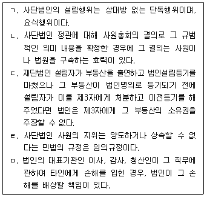
- ㄱ, ㄴ, ㄹ
- ㄱ, ㄴ, ㅁ
- ㄱ, ㄷ, ㅁ
- ㄴ, ㄷ, ㄹ
- ㄷ, ㄹ, ㅁ
(정답률: 알수없음)
23. 권한을 넘은 표현대리에 관한 설명으로 옳지 않은 것은? (다툼이 있으면 판례에 의함) (문제 오류로 실제 시험에서는 모두 정답처리 되었습니다. 여기서는 1번을 누르면 정답 처리 됩니다.)
- 임의대리와 법정대리에 모두 적용된다.
- 상대방의 유권대리의 주장 속에는 표현대리의 주장이 포함되어 있다고 볼 수 없다.
- 제3자라 함은 대리행위의 직접 상대방이 된 자만을 지칭한다.
- 대리행위와 수여받은 대리권 사이에 아무런 관계가 없는 경우에도 적용된다.
- 대리권이 있다고 믿을 만한 정당한 이유의 유무는 대리행위의 상대방을 기준으로 판단하는 것이 원칙이다.
(정답률: 알수없음)
24. 전세권에 관한 설명으로 옳지 않은 것은? (다툼이 있으면 판례에 의함)
- 대지와 건물의 소유자가 동일한 경우, 건물에 전세권을 설정한 때에는 그 대지소유권의 특별승계인은 전세권설정자에 대하여 지상권을 설정한 것으로 본다.
- 전세권자는 전세목적물의 현상을 유지하고 그 통상의 관리에 속한 수선을 해야 한다.
- 전세권자가 전세목적물에 필요비를 지출한 경우, 전세권설정자의 선택에 좇아 그 지출액이나 증가액의 상환을 청구할 수 있다.
- 전세권자가 전세목적물을 타인에게 임대한 경우, 전세권자는 임대하지 아니하였으면 면할 수 있는 불가항력으로 인한 손해에 대하여 책임을 부담한다.
- 전세권자는 전세목적물을 점유하여 그 목적물의 용도에 좇아 사용ㆍ수익할 수 있다.
(정답률: 알수없음)
25. 비영리 사단법인의 기관에 관한 설명으로 옳지 않은 것은? (다툼이 있으면 판례에 의함)
- 정관에 이사의 대표권 제한에 관한 규정이 있으면 등기되어 있지 않더라도 법인은 악의의 제3자에 대하여는 대항할 수 있다.
- 이사는 선량한 관리자의 주의로 그 직무를 행하여야 한다.
- 법인이 해산한 경우, 정관 또는 총회의 결의로 달리 정한 바가 없으면 파산의 경우를 제외하고는 이사가 청산인이 된다.
- 감사는 법인의 재산상황에 관하여 부정이 있음을 발견한 때에는 이를 총회 또는 주무관청에 보고하여야 한다.
- 정관에 다른 규정이 없는 경우, 임의해산은 총사원의 4분의 3이상, 정관변경은 총사원의 3분의 2이상의 동의를 요한다.
(정답률: 알수없음)
26. 법률행위의 조건과 기한에 관한 설명으로 옳지 않은 것은? (다툼이 있으면 판례에 의함)
- 불능조건이 정지조건이면 그 법률행위는 조건 없는 법률행위가 된다.
- 조건부권리는 처분, 상속, 보존 또는 담보로 할 수 있다.
- 불확정한 사실의 발생을 기한으로 한 경우, 그 발생이 불능인 때에는 기한이 도래한 것으로 본다.
- 조건의 성취로 인하여 이익을 받을 당사자가 신의성실에 반하여 조건을 성취시킨 때에는 상대방은 그 조건이 성취하지 아니한 것으로 주장할 수 있다.
- 일정한 사유가 발생한 후 채권자의 통지나 청구 등 채권자의 의사행위를 기다려 비로소 이행기가 도래하는 것으로 약정하는 경우, 그 특약은 채권자의 이익을 위한 것으로 본다.
(정답률: 37%)
27. 사회질서에 반하는 법률행위에 관한 설명으로 옳은 것은? (다툼이 있으면 판례에 의함)
- 반사회적 행위로 조성된 비자금을 은닉하기 위하여 임치한 행위는 사회질서에 반하는 법률행위이므로 임치인이 그 반환을 청구할 수 없다.
- 전통사찰의 주지직을 거액의 금품을 대가로 양도하기로 하는 약정이 있음을 알고도 이를 묵인 혹은 방조한 상태에서 한 종교법인의 주지임명행위는 사회질서에 반하는 법률행위로 무효이다.
- 대리인이 사회질서에 반하여 이중매수를 한 경우, 본인이 그러한 사정을 몰랐거나 반사회성을 야기한 것이 아니라면 그 대리행위는 유효하다.
- 처의 동의를 얻어 다른 여성과 성관계를 포함하는 원조교제계약을 한 경우, 그 계약에 따른 대가(代價)가 적당하다면 그 계약은 유효하다.
- 정당한 대가를 지급하고 목적물을 매수하였다면, 특별한 사정이 없는 한, 비록 그 후 목적물이 범죄행위로 취득된 것을 알게 되었더라도 소유권이전등기를 구하는 것이 사회질서에 반하는 법률행위라고 단정할 수 없다.
(정답률: 42%)
28. 미성년자 甲이 친권자 乙의 동의 없이 자기 소유의 부동산을 丙에게 매도하였다. 丙을 보호하기 위한 것이 아닌 것은?
- 친권자 乙에 대한 丙의 최고권
- 丙이 선의인 경우, 미성년자 甲에 대한 철회권
- 丙이 선의인 경우, 친권자 乙에 대한 철회권
- 丙이 선의인 경우, 친권자 乙에 대한 거절권
- 친권자 乙이 丙에게 이의보류 없이 소유권이전등기를 해 준 경우, 甲측의 취소권 소멸
(정답률: 37%)
29. 계약의 무권대리에 관한 설명으로 옳지 않은 것은? (표현대리를 고려하지 않으며, 다툼이 있으면 판례에 의함)
- 본인은 무권대리인이나 상대방에게 추인할 수 있다.
- 철회권을 행사하기 전에 반드시 최고권을 먼저 행사할 필요는 없다.
- 상대방이 악의이더라도 본인의 추인이 있을 때까지 철회할 수 있다.
- 철회는 본인뿐만 아니라 무권대리인에 대해서도 할 수 있다.
- 상대방이 철회를 하면 무권대리인과 맺은 계약은 확정적으로 무효가 된다.
(정답률: 25%)
30. 만 18세의 미혼인 자가 법정대리인의 동의 없이 단독으로 할 수 있는 것을 모두 고른 것은? (다툼이 있으면 판례에 의함)
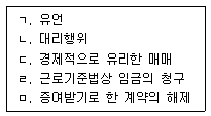
- ㄱ, ㄴ, ㄷ
- ㄱ, ㄴ, ㄹ
- ㄱ, ㄷ, ㅁ
- ㄴ, ㄹ, ㅁ
- ㄷ, ㄹ, ㅁ
(정답률: 46%)
31. 착오로 인한 의사표시에 관한 설명으로 옳지 않은 것은? (다툼이 있으면 판례에 의함)
- 의사표시가 기재된 편지가 집배원의 실수로 잘못 배달된 경우, 의사표시의 착오의 문제가 아니라 부도달(不到達)의 문제이다.
- 표의자의 중대한 과실로 착오가 있는 때에는 표의자는 착오를 이유로 그 의사표시를 취소하지 못한다.
- 대리인이 본인의 의도와 다른 의사표시를 한 경우, 대리인의 의사표시에 착오가 없는 한, 본인은 착오를 주장하지 못한다.
- 착오의 존재 및 그 착오가 법률행위 내용의 중요부분에 관한 것이라는 점에 대한 증명책임은 착오를 한 자의 상대방이 진다.
- 근저당권설정계약상 채무자의 동일성에 관한 착오는 법률행위 내용의 중요부분에 관한 착오이다.
(정답률: 알수없음)
32. 甲이 동료교사 乙에게 이자 없이 5백만원을 빌려주었고, 동료교사 丙은 乙의 채무를 보증하였다. 이 경우 소멸시효에 관한 설명으로 옳지 않은 것은? (다툼이 있으면 판례에 의함)
- 甲의 乙에 대한 채권은 10년의 소멸시효에 걸린다.
- 乙이 甲에게 3월 후에 갚기로 약정하였다면, 甲의 乙에 대한 채권의 소멸시효는 3월이 경과한 때부터 진행한다.
- 乙이 甲에게 甲의 부(父) 丁이 사망하면 갚기로 약정하였다면, 甲의 乙에 대한 채권의 소멸시효는 乙이 丁의 사망을 안 때부터 진행한다.
- 甲은 乙과의 합의로 미리 그 채권의 소멸시효를 연장 또는 가중할 수 없다.
- 丙이 보증채무를 이행한 경우, 丙의 乙에 대한 구상권은 보증채무를 이행한 때부터 소멸시효가 진행한다.
(정답률: 46%)
33. 통정허위표시에 관한 설명으로 옳은 것은? (다툼이 있으면 판례에 의함)
- 통정이란 당사자 일방이 상대방의 진의 아닌 의사표시를 인식하는 것만으로 충분하다.
- 증여를 매매계약으로 가장한 경우, 매매계약과 증여계약은 모두 무효이다.
- 가장행위에 의한 근저당권부 채권을 가압류한 자는 새로운 법률상의 이해관계를 맺은 제3자에 속하지 않는다.
- 부동산에 대한 강제집행을 면탈하기 위하여 허위의 근저당권설정등기를 한 것은, 특별한 사정이 없는 한, 사회질서에 반하는 법률행위로 볼 수 없다.
- 채무자가 채권자취소권의 대상인 사해행위를 한 경우, 이 사해행위가 통정허위표시인 경우에는 무효이므로 채권자취소권의 대상이 될 수 없다.
(정답률: 25%)
34. 자기계약과 쌍방대리에 관한 설명으로 옳지 않은 것은? (다툼이 있으면 판례에 의함)
- 본인들의 허락이 있는 경우에는 대리인은 동일한 법률행위에 관하여 당사자 쌍방을 대리할 수 있다.
- 자기계약의 금지에 위반한 법률행위라도 본인이 추인하면 유효하다.
- 자기계약과 쌍방대리의 금지는 법정대리에는 적용되지 않는다.
- 다툼이 없는 채무의 이행은 쌍방대리가 허용된다.
- 자기계약을 금지하는 것은 본인과 대리인 사이의 이해충돌을 방지하기 위한 것이다.
(정답률: 알수없음)
35. 甲은 궁박(窮迫)하여 소유하던 건물(시가 2억원 상당)을 乙에게 5천만원에 매도하였다. 그 후 乙은 그 건물을 선의의 丙에게 양도하고 소유권이전등기를 경료하였다. 이에 관한 설명으로 옳은 것은? (다툼이 있으면 판례에 의함)
- 불공정한 법률행위가 성립하려면 乙이 甲의 궁박을 이용하였어야 한다.
- 甲에게 궁박은 있었으나 경솔하지 않았다면, 甲과 乙의 계약은 불공정한 법률행위가 될 수 없다.
- 불공정한 법률행위의 주관적ㆍ객관적 요건을 모두 乙이 증명하여야 한다.
- 甲과 乙의 계약이 불공정한 법률행위로 무효이더라도 丙이 선의이면 甲은 丙에 대하여 건물의 반환을 청구할 수 없다.
- 甲과 乙의 매매계약이 불공정한 법률행위이더라도 甲이 추인하면 매매계약이 유효하게 된다.
(정답률: 19%)
36. 진의 아닌 의사표시에 관한 설명으로 옳지 않은 것은? (다툼이 있으면 판례에 의함)
- 남편을 안심시키려는 고객의 요청에 따라 증권회사 직원이 증권투자로 인한 고객의 손해에 대하여 책임을 지겠다는 내용의 각서를 고객에게 작성하여 주었다면, 이는 진의 아닌 의사표시로서 무효이다.
- 공무원이 사직의 의사표시를 하여 의원면직처분이 된 경우, 내심의 의사가 사직할 뜻이 아니었더라도 그 면직처분은 유효하다.
- 진의 아닌 의사표시에서 진의란 특정한 내용의 의사표시를 하고자 하는 표의자의 생각을 뜻하는 것이 아니고, 표의자가 진정으로 마음속에서 바라는 사항을 뜻하는 것이다.
- 진의 아닌 의사표시 규정은 대리인이 배임적 대리행위를 한 경우에 유추적용될 수 있다.
- 진의 아닌 의사표시라는 이유로 무효를 주장하는 경우, 증명책임은 무효를 주장하는 자에게 있다.
(정답률: 알수없음)
37. 미성년자 甲은 친권자 乙의 동의 없이 丙으로부터 고가(高價)의 컴퓨터를 구입하는 계약을 체결한 후 대금을 지급하지 않고 있다. 이에 관한 설명으로 옳은 것은? (다툼이 있으면 판례에 의함)
- 甲은 乙의 동의 없이 단독으로 매매계약을 취소할 수 없다.
- 丙은 甲이 어려 보여 “미성년자 아니냐?”라고 묻자 甲은 “아닙니다.”라고 단순히 말한 경우, 甲은 사술을 썼으므로 취소권이 배제된다.
- 丙이 성년이 되지 않은 甲에게 1월 이상의 기간을 정하여 추인 여부의 확답을 최고하였으나 甲이 그 기간 내에 확답을 발하지 않았다면 매매계약을 추인한 것으로 본다.
- 甲이 매매계약을 취소하는데 대하여 乙은 동의권을 가지지만 스스로 계약을 취소할 수 없다.
- 丙이 1월 이상의 기간을 정하여 乙에게 추인 여부의 확답을 최고하였으나, 乙이 그 기간 내에 확답을 발하지 않았다면 그 매매계약을 추인한 것으로 본다.
(정답률: 알수없음)
38. 법률행위의 취소에 관한 설명으로 옳지 않은 것은? (다툼이 있으면 판례에 의함)
- 법률행위의 취소 사유가 없는 경우에는 당사자 쌍방이 각각 취소의 의사표시를 하였다 하더라도 그 법률행위가 취소되는 것은 아니다.
- 취소는 재판상 행하여질 것이 요구되는 경우 외에는 상대방에 의하여 인식될 수 있다면 어떠한 방법에 의하더라도 무방하다.
- 한정치산자가 법률행위를 취소한 경우, 한정치산자는 그 행위로 인하여 받은 이익이 현존하는 한도에서 상환할 책임이 있다.
- 취소권의 존속기간의 법적 성질은 제척기간이다.
- 금치산자는 능력자가 되기 전이라도 법정대리인의 동의를 얻어 추인할 수 있다.
(정답률: 20%)
39. 甲이 자기 소유의 아파트를 乙에게 팔면서 乙의 요청으로 잔금지급기일 전에 소유권이전등기를 해 주었다. 그 후 乙이 잔금을 지급하지 않자 甲은 적법한 절차를 거쳐 매매계약을 해제하였다. 이 경우의 법률관계에 대한 설명으로 옳지 않은 것은? (다툼이 있으면 판례에 의함)
- 乙의 잔금지급의무는 소멸한다.
- 해제의 의사표시가 乙에게 도달하였더라도 甲명의로 등기가 회복되어야 아파트의 소유권이 甲에게 복귀한다.
- 甲은 乙로부터 받은 대금과 받은 날부터 반환할 때까지의 법정이자를 반환하여야 한다.
- 甲이 계약을 해제하기 전에 丙이 乙로부터 아파트를 임차하여 대항요건을 갖추었다면, 甲은 丙을 상대로 퇴거를 요구할 수 없다.
- 계약이 해제된 이후에도 乙이 자신의 착오를 증명한다면 계약을 취소할 수 있다.
(정답률: 알수없음)
40. 법률행위의 효력에 관한 설명으로 옳지 않은 것은? (다툼이 있으면 판례에 의함)
- 매도인이 이미 제3자에게 부동산을 매각한 사실을 매수인이 알면서 매수하였더라도 그것만으로는 그 매매계약을 사회질서에 반하는 법률행위라고 단정할 수 없다.
- 의사능력이 없는 미성년자의 법률행위는 무효인 동시에 취소할 수 있다.
- 하나의 법률행위가 가분적(可分的)인 경우, 일부취소도 가능하다.
- 증여계약과 같이 아무런 대가관계가 없이 일방적인 급부를 제공하는 법률행위는 불공정한 법률행위가 되지 않는다.
- 가장매매의 매수인이 추인하면 그 매매계약은 계약시에 소급하여 유효하게 된다.
(정답률: 25%)
2과목: 회계원리
41. 회계상의 거래에 해당하지 않는 것으로만 묶인 것은? (단, 당해 사건으로 인해 발생한 영향은 화폐액으로 측정 가능하다.)
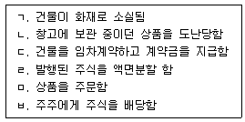
- ㄱ, ㄴ
- ㄷ, ㄹ
- ㄷ, ㅁ
- ㄹ, ㅁ
- ㄹ, ㅂ
(정답률: 알수없음)
42. 대차대조표 계정으로 분류되는 것은?
- 투자자산처분손실
- 유형자산처분손실
- 단기매매증권평가손실
- 매도가능증권평가손실
- 재고자산감모손실
(정답률: 알수없음)
43. (주)대한의 2008년말 결산수정분개 전 매출채권 잔액은 ₩200,000이고, 대손충당금 잔액은 ₩2,000이다. 결산시 매출채권 잔액의 5%가 대손될 것으로 추정한다면, 2008년도말 손익계산서에 계상할 대손상각비는?
- ₩8,000
- ₩9,800
- ₩10,000
- ₩11,800
- ₩12,000
(정답률: 37%)
44. 기업회계기준서상의 무형자산에 관한 내용으로 옳지 않은 것은?
- 무형자산은 비화폐성자산이다.
- 무형자산의 상각시 합리적인 상각방법을 정할 수 없는 경우에는 정률법을 사용한다.
- 무형자산의 상각기간은 독점적ㆍ배타적인 권리를 부여하고 있는 관계법령이나 계약에 정해진 경우를 제외하고는 20년을 초과할 수 없다.
- 무형자산을 개별적으로 취득하는 경우 취득원가는 구입원가와 자산을 사용할 수 있도록 준비하는데 직접 관련되는 지출로 구성된다.
- 무형자산의 잔존가액은 없는 것을 원칙으로 한다.
(정답률: 30%)
45. (주)대한은 2008년 8월 1일에 1년분 임차료 ₩12,000을 현금지급하면서 전액 비용으로 회계처리하였다. 기말에 필요한 결산수정분개로 옳은 것은?
- (차) 임차료 5,000, (대) 선급임차료 5,000
- (차) 현금 5,000, (대) 임차료 5,000
- (차) 임차료 7,000, (대) 선금임차료 7,000
- (차) 현금 7,000, (대) 임차료 7,000
- (차) 선급임차료 7,000, (대) 임차료 7,000
(정답률: 50%)
46. 2008년말 (주)대한의 금고에 보관된 자산은 다음과 같다. 대차대조표에 표시할 2008년말 현금및현금성자산의 잔액은? (단, 금고 외에 존재하는 현금및 현금성자산은 없다.)
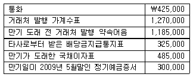
- ₩2,420,000
- ₩2,5⑤,000
- ₩2,8⑤,000
- ₩3,690,000
- ₩3,990,000
(정답률: 알수없음)
47. (주)대한의 2008년도 회계자료의 일부이다. 주어진 자료에 의하여 계산한 2008년도 당기순손익은?
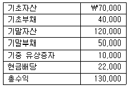
- 당기순손실 ₩40,000
- 당기순손실 ₩20,000
- 당기순이익 ₩40,000
- 당기순이익 ₩52,000
- 당기순이익 ₩82,000
(정답률: 40%)
48. (주)대한의 2008년도 회계자료의 일부이다. 주어진 계정의 잔액을 이용하여 계산한 2008년도 기타포괄손익누계액은?
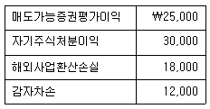
- ₩7,000
- ₩13,000
- ₩25,000
- ₩37,000
- ₩43,000
(정답률: 알수없음)
49. 다음에 제시된 회계순환과정 중 선택적인 절차에 해당하는 것으로만 묶인 것은?
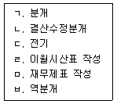
- ㄱ, ㄴ
- ㄷ, ㅁ
- ㄹ, ㅂ
- ㄱ, ㅁ
- ㄴ, ㄹ
(정답률: 알수없음)
50. (주)대한이 2008년도에 현금으로 지급한 임차료는 ₩2,500,000이다. 이와 관련된 계정의 잔액은 다음과 같다. 2008년도 손익계산서에 계상할 임차료는?
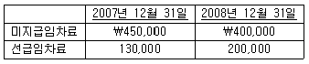
- ₩2,380,000
- ₩2,430,000
- ₩2,450,000
- ₩2,500,000
- ₩2,620,000
(정답률: 알수없음)
51. 2008년말 (주)대한의 장부상 당좌예금 잔액은 ₩475,000이었으며, 은행에서 발행한 당좌예금 잔액증명서에는 ₩507,000이었다. 그 차이의 원인이 다음과 같을 때, 2008년말 (주)대한의 올바른 당좌예금 잔액은?
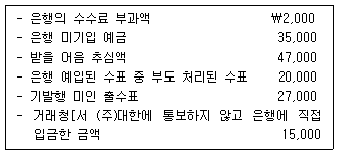
- ₩453,000
- ₩473,000
- ₩488,000
- ₩500,000
- ₩515,000
(정답률: 알수없음)
52. (주)대한은 액면가액 ₩1,000,000, 액면이자율 연10%, 만기 1년인 약속어음을 수취하여 6개월간 보유한 후, 연12%의 할인율로 은행에서 할인하였다. 이것이 매출채권 매각거래에 해당할 때, 할인시점에서 (주)대한이 계상하여야 할 매출채권처분손실은?
- ₩16,000
- ₩34,000
- ₩50,000
- ₩62,000
- ₩66,000
(정답률: 40%)
53. (주)대한의 2008년 1월 상품매매거래에 관한 기록이다. 계속기록법에 의한 선입선출법으로 상품거래를 기록할 경우에 1월 20일의 회계처리로 옳은 것은?
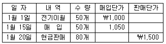
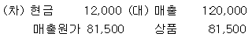
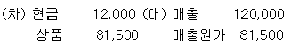
- (차) 현금 120,000 (대) 매출 120,000
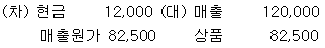
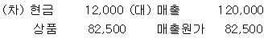
(정답률: 19%)
54. (주)대한은 2008년 9월 14일 상품을 현금으로 매입하고 회계처리를 누락하였다. 그런데 재고자산평가시 실지재고조사법에 의한 평균법을 사용하고 있어 해당상품은 대차대조표상 기말재고액에 적정하게 반영되어 있다. 9월 14일의 회계처리 누락으로 인한 오류가 2008년말 재무제표의 총자산과 당기순이익에 미치는 영향으로 옳은 것은? (순서대로 총자산, 당기순이익)
- 과소 계상, 과소 계상
- 과대 계상, 과대 계상
- 영향 없음, 영향 없음
- 과소 계상, 과대 계상
- 과대 계상, 과소 계상
(정답률: 알수없음)
55. 재고자산의 시가가 취득원가보다 하락한 경우에는 저가법을 사용하여 재고자산의 대차대조표가액을 결정한다. 다음 중 재고자산 시가가 원가 이하로 하락할 수 있는 사유에 해당하지 않는 것은?
- 손상을 입은 경우
- 재고자산평가방법을 변경하는 경우
- 완성하거나 판매하는 데 필요한 원가가 상승하는 경우
- 진부화하여 정상적인 판매시장이 사라지거나 기술 및 시장 여건 등의 변화에 의해서 판매가치가 하락한 경우
- 대차대조표일로부터 1년 또는 정상영업주기 내에 판매되지 않았거나 생산에 투입할 수 없어 장기체화된 경우
(정답률: 알수없음)
56. 대차대조표에 투자자산으로 표시할 수 없는 것은?
- 자기사채
- 투자부동산
- 장기대여금
- 장기투자증권
- 지분법적용투자주식
(정답률: 알수없음)
57. (주)대한이 보유하고 있는 (주)민국(코스닥상장법인임)의 주식에 관한 거래 자료이다. 2008년 2월 10일 (주)대한의 회계처리로 옳은 것은?
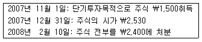
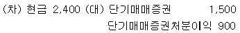
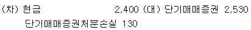
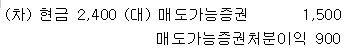
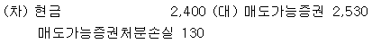
- (차) 현금 2,400 (대) 단기매매증권 2,400
(정답률: 알수없음)
58. 기업회계기준서상 유형자산의 취득원가에 관한 설명으로 옳지 않은 것은?
- 취득원가는 자산을 취득하기 위하여 자산의 취득시점이나 건설시점에서 지급한 현금 및 현금성자산 또는 제공하거나 부담할 기타 대가의 공정가액을 말한다.
- 유형자산의 취득시 매입할인이 있는 경우에는 이를 차감하여 취득원가를 산출한다.
- 유형자산을 장기후불조건으로 구입한 경우에는 취득시점의 현금구입가격(현재가치)을 취득원가로 한다.
- 유형자산을 취득 또는 사용가능한 상태로 준비하는 과정과 직접 관련이 없는 경비는 유형자산의 취득원가에 포함하지 않는다.
- 건물 신축을 위해 사용 중인 기존건물을 철거하는 경우 철거비용은 전액 신축건물의 취득원가에 포함한다.
(정답률: 40%)
59. (주)대한은 2006년 1월 1일에 취득한 건물(내용연수 4년, 잔존가액 ₩300,000)에 대하여 연수합계법을 적용하여 감가상각비를 계상하고 있다. 이 건물에 대한 2008년도 감가상각비가 ₩1,500,000이라고 할 때 취득원가는?
- ₩4,⑤0,000
- ₩5,300,000
- ₩7,500,000
- ₩7,800,000
- ₩15,300,000
(정답률: 알수없음)
60. (주)대한은 2008년 1월 1일 기계장치(취득일 2007년 1월 1일, 내용연수 5년, 잔존가액 ₩0, 정액법 상각)의 성능 향상(내용연수에는 영향 없음)을 위해 ₩500,000을 지출하였다. 이는 자본적 지출에 해당하나 당기 비용으로 회계처리하였다. 이러한 오류가 2008년도 당기순이익에 미치는 영향으로 옳은 것은?
- ₩500,000 감소
- ₩400,000 감소
- ₩375,000 감소
- ₩375,000 증가
- ₩400,000 증가
(정답률: 알수없음)
61. (주)대한은 2008년 1월 1일 액면가액 ₩200,000(만기 3년, 액면이자율 연10%, 유효이자율 연15%, 이자지급일 12월 31일)의 사채를 ₩177,164에 할인발행하였다. 2008년도 손익계산서에 보고할 사채이자비용은? (단, 계산시 소수점 이하는 버린다.)
- ₩17,716
- ₩20,000
- ₩26,574
- ₩27,560
- ₩30,000
(정답률: 40%)
62. (주)대한은 2008년 1월 1일에 액면금액 ₩10,000(만기 3년, 액면이자율 연8%, 유효이자율 연10%, 이자지급일 12월 31일)의 사채를 ₩9,502에 할인발행하였다. (주)대한이 동 사채를 2009년 1월 1일에 시장에서 ₩9,600에 취득하여 상환하였을 때, 사채상환손익은? (단, 계산시 소수점 이하는 버린다.)
- 상환손실 ₩98
- 상환손실 ₩52
- 상환이익 ₩52
- 상환이익 ₩98
- 상환이익 ₩400
(정답률: 알수없음)
63. (주)대한은 2008년 1월 1일부터 판매촉진의 일환으로 음료수병 뚜껑 속에 당첨표시(당첨률 10%)가 있는 경우에 원가 ₩300의 경품을 제공하고 있다. 2008년도의 음료수 판매량은 총 200,000병이었으며, 6,500개의 경품을 지급하였다. 과거 경험상 당첨된 경품 중 80%가 청구될 것으로 추정된다. 2008년 결산시 계상해야 할 경품충당부채는?
- ₩1,950,000
- ₩2,850,000
- ₩4,⑤0,000
- ₩4,800,000
- ₩6,000,000
(정답률: 10%)
64. 무상증자가 재무제표에 미치는 영향으로 옳은 것은?
- 재무활동으로 인한 현금흐름을 증가시킨다.
- 자본총계를 증가시킨다.
- 자본금을 증가시킨다.
- 총자산을 증가시킨다.
- 총부채를 증가시킨다.
(정답률: 46%)
65. 수익에 직접 대응되어 인식되는 비용으로 옳은 것은?
- 대표이사 업무용 승용차의 보험료
- 당기에 판매된 상품의 취득원가
- 본사건물의 감가상각비
- 영업자금 조달을 위해 발행된 사채의 이자비용
- 기업의 이미지 제고를 위한 광고선전비
(정답률: 40%)
66. (주)대한은 2008년 12월 1일 (주)민국에 상품 200,000개(단위당 판매가격 ₩50)를 판매하기로 계약하고, 2008년 12월 중에 100,000개, 2009년 1월 중에 100,000개를 각각 인도하였다. 계약시점에서 판매대금의 50%를 수취하였으며, 상품 인도시점마다 25%씩 각각 수취하였다. (주)대한이 2008년도 위의 거래와 관련하여 인식한 매출액은? (단, 상품 인도시점에서 소유에 따른 위험과 효익이 구매자에게 충분히 이전되었다.)
- ₩0
- ₩2,500,000
- ₩5,000,000
- ₩7,500,000
- ₩10,000,000
(정답률: 알수없음)
67. (주)대한은 2008년 7월 1일에 송장가격 ₩1,000,000의 상품을 신용조건 2/10, n/30으로 외상매입하였다. 매입 직후 상품의 하자로 인하여 외상매입상품 중 30%를 즉시 반품하였다. (주)대한이 2008년 7월 9일에 외상매입대금 전액을 지급한다면 지급할 금액은?
- ₩490,000
- ₩686,000
- ₩700,000
- ₩980,000
- ₩1,000,000
(정답률: 40%)
68. 대차대조표 작성과 표시에 관한 설명으로 옳지 않은 것은?
- 기업의 정상적인 영업주기 내에 상환 등을 통해 소멸될 것으로 예상되는 매입채무는 유동부채로 분류한다.
- 비유동자산은 투자자산, 유형자산, 무형자산, 기타비유동자산으로 구분한다.
- 사용의 제한이 없는 현금및현금성자산은 유동자산으로 분류한다.
- 자산과 부채는 유동성이 큰 항목부터 배열하는 것을 원칙으로 한다.
- 자기주식, 주식할인발행차금은 기타자본잉여금으로 분류한다.
(정답률: 37%)
69. 간접법을 이용하여 영업활동으로 인한 현금흐름을 계산하고자 한다. 다음 설명 중 옳은 것은?
- 매출채권 감소액은 당기순이익에 가산한다.
- 단기매매증권평가이익은 당기순이익에 가산한다.
- 유형자산처분이익은 당기순이익에 가산한다.
- 매입채무 증가액은 당기순이익에서 차감한다.
- 미지급비용 감소액은 당기순이익에 가산한다.
(정답률: 알수없음)
70. (주)대한은 2008년 10월 1일 은행으로부터 ₩100,000을 3개월간 차입(이자율 연12%, 이자는 원금상환시 지급)하였다. 만기일인 2008년 12월 31일 상환시 회계처리로 옳은 것은? (단, 이자는 월할 계산한다.)
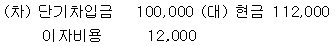
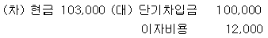
- (차) 현금 103,000 (대) 단기차입금 103,000
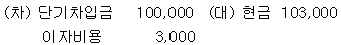
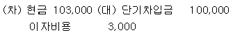
(정답률: 알수없음)
71. (주)대한의 2008년 회계자료의 일부이다. 매출원가를 이용하여 계산한 재고자산회전율은?
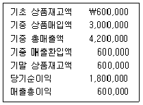
- 1회
- 3회
- 5회
- 7회
- 9회
(정답률: 15%)
72. 다음 재무비율간의 관계를 이용하여 계산한 자기자본이익률(ROE : Return On Equity)은?
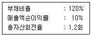
- 10.0%
- 12.0%
- 14.4%
- 24.0%
- 26.4%
(정답률: 37%)
73. 복수 공정 종합원가계산에서 완성도(또는 진척도)가 항상 100%인 원가항목으로 옳은 것은?
- 직접재료원가
- 직접노무원가
- 가공원가
- 제조간접원가
- 전공정대체원가
(정답률: 알수없음)
74. (주)대한은 정상개별원가계산제도를 적용하고 있다. 제조간접원가 예정배부율은 직접노무시간당 ₩1,000이고, 실제 발생한 직접노무시간은 15,000시간이다. 실제 제조간접원가 발생액이 ₩13,000,000이라면, 제조간접원가 배부차이로 옳은 것은?
- ₩1,000,000 과소배부
- ₩1,000,000 과대배부
- ₩2,000,000 과소배부
- ₩2,000,000 과대배부
- 과소 및 과대배부는 없다.
(정답률: 알수없음)
75. (주)대한은 종합원가계산제도를 적용하고 있다. 2008년도 원가계산에서 완성품환산량 1단위당 직접재료원가와 가공원가가 각각 ₩330과 ₩240으로 산정되었다. 기말재공품 수량은 200개이고, 가공원가 완성도는 75%이다. 직접재료원가는 공정초기에 모두 투입된다. 기말재공품의 원가는?
- ₩100,000
- ₩102,000
- ₩1⑤,000
- ₩112,000
- ₩114,000
(정답률: 19%)
76. (주)대한의 2008년도 제품 제조 및 판매와 관련된 자료 일부가 다음과 같을 때 당기총제조원가는?
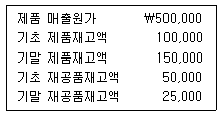
- ₩475,000
- ₩500,000
- ₩525,000
- ₩550,000
- ₩575,000
(정답률: 9%)
77. (주)대한은 두 개의 보조부문(수선, 전력)과 두 개의 제조부문(기계, 완성)을 운영하고 있다. 각 부문에서 발생한 원가자료는 다음과 같다. 부문공통원가는 각 부문의 점유면적으로 배부한다. 수선부문원가와 전력부문원가는 수선시간 및 전력사용량을 각각 이용하여 직접배부법으로 제조부문에 배부한다. 기계부문의 배부 후 원가 총액은?
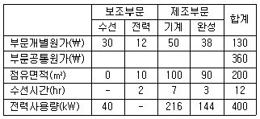
- ₩200
- ₩202
- ₩250
- ₩260
- ₩269
(정답률: 알수없음)
78. 2008년 1월초에 설립된 (주)대한은 자동차 부품을 주문제작하며, 개별원가계산제도를 적용하여 주문별로 제품원가를 계산하고 있다. 다음은 2008년 1월의 주문생산에 관한 자료이다. 1월에 생산한 제품원가와 1월말 재공품원가는? (순서대로 제품원가, 재공품원가)
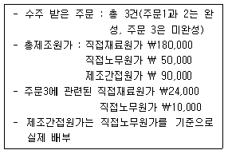
- \262,000, \58,000
- \264,000, \56,000
- \266,000, \54,000
- \268,000, \52,000
- \270,000, \50,000
(정답률: 알수없음)
79. (주)대한은 2008년도에 생산한 제품 10,000개 중 8,000개를 판매하였다. 공장관리자와 판매관리자의 연간 급여액이 각각 ₩50,000,000과 ₩35,000,000이라면, 급여액 중 2008년도 손익계산서에 인식할 비용은?(단, 기초 제품 및 기초∙기말 재공품재고는 없다.)
- ₩35,000,000
- ₩40,000,000
- ₩50,000,000
- ₩75,000,000
- ₩85,000,000
(정답률: 알수없음)
80. (주)대한은 단위당 판매가격이 ₩100인 제품A만을 생산ㆍ판매하고 있다. 2008년도의 예상판매량은 7,000단위이며, 원가자료는 다음과 같다. 법인세율이 40%일 때, 2008년도의 예상세후이익은?
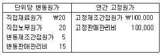
- ₩48,000
- ₩56,000
- ₩64,000
- ₩72,000
- ₩80,000
(정답률: 알수없음)
3과목: 공동주택시설개론
81. 건축물의 구조에 관한 설명으로 옳지 않은 것은?
- 플랫 슬래브(flat slab)구조는 내부에 보를 사용하지 않고 기둥에 의하여 바닥(판) 슬래브를 직접 지지하는 구조이다.
- 철근콘크리트구조는 압축에 강한 철근과 인장에 강한 콘크리트를 일체화하여 만든 구조이다.
- 프리캐스트구조는 부재를 현장 이외의 장소에서 제작하고 현장에 반입하여 조립하는 구조이다.
- 조적구조는 벽돌, 블록 등의 재료를 모르타르와 같은 접착재료로 쌓아 올린 구조이다.
- 철골구조는 강재를 볼트, 용접 등의 접합 방법으로 조립한 부재 또는 단일 형강 등을 이용하여 구성한 구조이다.
(정답률: 50%)
82. 건축물의 지정 및 기초공사에 관한 설명으로 옳지 않은 것은?
- 현장타설 콘크리트말뚝(제자리 콘크리트말뚝)은 지중에 구멍을 뚫어 그 속에 조립된 철근을 설치하고 콘크리트를 타설하여 형성하는 말뚝을 말한다.
- 지반의 연질층이 매우 두꺼운 경우 말뚝을 박아 말뚝표면과 주위 흙과의 마찰력으로 하중을 지지하는 말뚝을 마찰말뚝이라 한다.
- 사질지반의 경우 수직하중을 가하면 접지압은 주변에서 최대이고 중앙에서 최소가 된다.
- 동일 건물에서는 지지말뚝과 마찰말뚝을 혼용하지 않는 것이 좋다.
- 기성 콘크리트 말뚝의 설치방법은 타격공법, 진동공법, 압입공법 등이 있다.
(정답률: 알수없음)
83. 지반을 개량하거나 강화하기 위한 지반개량 공법에 해당되지 않는 것은?
- 치환 공법
- 다짐 공법
- 생석회 공법
- 샌드 드레인 공법
- 아일랜드 공법
(정답률: 60%)
84. 건축물에 작용하는 활하중에 관한 설명으로 옳지 않은 것은?
- 활하중은 구조체 자체의 무게나 구조물의 존재기간 중 지속적으로 구조물에 작용하는 하중을 말한다.
- 활하중은 등분포 활하중과 집중 활하중으로 분류할 수 있다.
- 활하중은 신축 건축물 및 공작물의 구조계산과 기존 건축물의 안전성 검토시 적용된다.
- 하중을 장기하중과 단기하중으로 구분할 경우 활하중은 장기하중에 포함된다.
- 공동주택의 경우 발코니의 활하중은 거실의 활하중보다 큰 값을 사용하는 것이 일반적이다.
(정답률: 알수없음)
85. 벽돌구조에 관한 설명으로 옳지 않은 것은?
- 내력벽으로 둘러싸인 바닥면적이 60m2를 넘는 2층 건물인 경우에 1층 내력벽의 두께는 190mm 이상이어야 한다.
- 영롱쌓기는 벽돌벽면에 구멍을 내어 쌓는 방식으로 장식적인 효과가 있다.
- 내력벽으로 둘러싸인 부분의 바닥면적은 80m2를 넘을 수 없다.
- 영식쌓기는 모서리 부분에 반절 또는 이오토막을 사용하여 통줄눈이 생기지 않게 하는 방법이다.
- 벽돌벽체의 강도에 영향을 미치는 요소에는 벽돌자체의 강도, 쌓기방법, 쌓기작업의 정밀도 등이 있다.
(정답률: 34%)
86. 조적구조에 관한 설명으로 옳지 않은 것은?
- 보강블록조는 블록의 빈 구멍에 철근과 콘크리트를 넣어 보강한 것으로 통줄눈 시공이 가능하다.
- 공간쌓기는 방한, 방음 및 방서의 효과를 높일 수 있다.
- 내화벽돌은 내화성능을 향상시키기 위해 물축이기를 충분히 하여 사용한다.
- 벽돌 내쌓기는 벽돌을 벽면에서 내밀어 쌓는 방법으로 벽돌 벽면 중간에서 1켜씩 내쌓기를 할 때에는 1/8 B 내쌓기로 한다.
- 개구부 아치의 하부에는 인장력이 발생하지 않게 한다.
(정답률: 알수없음)
87. 철골공사의 용접접합에 관한 설명으로 옳지 않은 것은?
- 구멍에 의한 부재단면의 결손이 없다.
- 소음 발생이 적다.
- 용접공의 숙련도에 따라서 품질이 좌우된다.
- 용접 열에 의하여 부재의 변형이 생기기 쉽다.
- 접합부의 검사가 쉽다.
(정답률: 알수없음)
88. 철골구조에 관한 설명으로 옳지 않은 것은?
- 고장력볼트 죄임(조임)기구에는 임팩트 렌치, 토크 렌치 등이 있다.
- 고장력볼트 접합은 부재간의 마찰력에 의하여 힘을 전달하는 마찰접합이 가능하다.
- 얇은 강판에 적당한 간격으로 골을 내어 요철 가공한 것을 데크 플레이트라 하며 주로 바닥판 공사에 사용된다.
- 시어 커넥터(shear connector)는 철골보에서 웨브의 좌굴을 방지하기 위해 사용된다.
- 허니콤 보의 웨브는 설비의 배관 통로로 이용될 수 있다.
(정답률: 알수없음)
89. 아직 굳지 않은 콘크리트의 반죽질기를 측정하여 시공연도를 판단하는 기준으로 사용되는 시험은?
- 슬럼프 시험
- 크리프 시험
- 표준관입 시험
- 분말도 시험
- 슈미트해머 시험
(정답률: 40%)
90. 콘크리트를 부어 넣을 때 거푸집이 벌어지거나 변형되지 않게 연결 또는 고정하는 것은?
- 스페이서(spacer)
- 폼타이(form tie)
- 슬라이딩폼(sliding form)
- 세퍼레이터(separator)
- 스티프너(stiffener)
(정답률: 28%)
91. 철근공사에 관한 설명으로 옳지 않은 것은?
- 철근의 이음방법은 겹침이음, 기계적이음, 용접이음 등으로 구분할 수 있다.
- 이형철근은 콘크리트와 철근의 부착을 돕기 위하여 철근의 표면에 리브와 마디를 갖는 철근이다.
- 보의 철근을 기둥에 묻고, 슬래브 철근을 보에 묻는 등 콘크리트 속에 철근을 깊게 묻어 뽑히지 않도록 하는 것을 정착이라 한다.
- 특별한 지시가 없는 한 25mm 이하의 철근은 가열 가공을 한다.
- 철근의 부식은 염해, 콘크리트의 중성화, 동결융해 등에 의하여 나타난다.
(정답률: 46%)
92. 홈통에 관한 설명으로 옳지 않은 것은?
- 처마홈통과 선홈통을 연결하는 경사홈통을 깔대기홈통이라 한다.
- 처마 끝에 수평으로 설치하여 빗물을 받는 홈통을 처마홈통이라 한다.
- 처마홈통에서 내려오는 빗물을 지상으로 유도하는 수직 홈통을 선홈통이라 한다.
- 위(상부)층 선홈통의 빗물을 받아 아래(하부)층 지붕의 처마홈통이나 선홈통에 넘겨주는 홈통을 누인홈통이라 한다.
- 두 개의 지붕면이 만나는 자리 또는 지붕면과 벽면이 만나는 수평지붕골에 쓰이는 홈통을 장식홈통이라 한다.
(정답률: 20%)
93. 방수공법에 관한 설명으로 옳지 않은 것은?
- 지하실 안방수는 수압이 작은 지하실에 적당하다.
- 지하실 바깥방수는 본 공사에 선행하는 것이 일반적이다.
- 옥상방수는 지하실 방수보다 아스팔트 침입도가 작고 연화점이 낮은 것을 사용한다.
- 옥상방수의 바탕은 물흘림경사를 두어 배수가 잘 되도록 한다.
- 외벽방수에 있어서 벽을 두껍게 하거나 공간을 두어 이중으로 하면 어느 정도 방수효과가 있다.
(정답률: 알수없음)
94. 다음의 용어에 관한 설명 중 옳지 않은 것은?
- 테라코타는 속이 빈 대형 점토제품으로 건축물의 난간벽, 주두 등의 장식에 사용된다.
- 코펜하겐리브는 오림목을 특수형태로 다듬어 벽에 붙여댄 것으로 음향조절용으로 사용된다.
- 크레센트는 오르내리창 등의 잠금장치이다.
- 수장공사에서 고막이는 지면으로부터 높이 약 500mm 정도의 외벽하부를 벽면에서 약 10~30mm 정도 나오게 하거나 들어가게 한 것이다.
- 살대반자는 반자틀을 격자로 짜고 그 위에 넓은 널을 덮은 반자이다.
(정답률: 37%)
95. 창호 및 유리공사에 관한 설명으로 옳지 않은 것은?
- 자재문은 자유경첩이 달려 있어 안팎으로 자유롭게 열리고 저절로 닫힌다.
- 도어체크는 여닫이문의 문 위틀과 문짝에 설치하여 자동으로 문이 닫히게 하는 장치이다.
- 가스켓(gasket)은 유리 끼우기에 사용되는 탄성재로 방수성, 기밀성을 갖는 밀봉재이다.
- 스팬드럴유리는 유리내부에 철, 알루미늄 등의 망을 넣어 압착성형한 유리로 파손을 방지하고 도난 및 화재예방에 쓰인다.
- 플러시문은 울거미를 짜고 중간에 살을 배치하여 양면에 합판을 교착한 문이다.
(정답률: 25%)
96. 벽타일 붙이기 공사에 관한 설명으로 옳지 않은 것은?
- 동시줄눈붙이기(밀착붙임공법)는 바탕면에 붙임 모르타르를 발라 타일을 붙인 다음, 충격공구로 타일면에 충격을 가하여 붙이는 방법이다.
- 판형붙이기는 동시줄눈붙이기와 붙임 방법은 같으나 붙이는 재료로 모르타르 대신 유기질 접착제 또는 수지 모르타르를 사용한다.
- 떠붙이기는 타일 뒷면에 붙임 모르타르를 바르고 빈틈이 생기지 않게 바탕에 눌러 붙이는 방법으로 백화가 발생하기 쉽기 때문에 외장용으로는 사용하지 않는 것이 좋다.
- 압착붙이기는 평탄하게 마무리한 바탕 모르타르면에 붙임 모르타르를 바르고, 나무망치 등으로 타일을 두들겨 붙이는 방법이다.
- 개량압착붙이기는 평탄하게 마무리한 바탕 모르타르면에 붙임 모르타르를 바르고, 타일 뒷면에도 붙임 모르타르를 발라 붙이는 방법이다.
(정답률: 30%)
97. 가연성 도료의 보관 및 취급에 관한 설명으로 옳지 않은 것은?
- 사용하는 도료는 될 수 있는 대로 밀봉하여 새거나 엎지르지 않게 다루고, 샌 것 또는 엎지른 것은 발화의 위험이 없도록 닦아낸다.
- 건물 내의 일부를 도료의 저장장소로 이용할 때는 내화구조 또는 방화구조로 된 구획된 장소를 선택한다.
- 지붕과 천장은 불에 잘 타지 않는 난연재로 한다.
- 바닥에는 침투성이 없는 재료를 깐다.
- 도료가 묻은 헝겊 등 자연발화의 우려가 있는 것을 도료보관 창고 안에 두어서는 안 되며, 반드시 소각시켜야 한다.
(정답률: 37%)
98. 계단의 구성요소에 해당되지 않는 것은?
- 디딤판
- 챌판
- 징두리
- 엄지기둥
- 난간두겁(대)
(정답률: 알수없음)
99. 표준품셈에 의한 각 재료의 할증률로 옳지 않은 것은?
- 시멘트 블록: 4%
- 이형철근: 3%
- 시멘트 벽돌: 5%
- 단열재: 5%
- 유리: 1%
(정답률: 25%)
100. 표준품셈의 적용에 관한 설명으로 옳지 않은 것은?
- 일일 작업시간은 8시간을 기준으로 한다.
- 건설공사의 예정가격 산정시 공사규모, 공사기간 및 현장조건 등을 감안하여 가장 합리적인 공법을 채택한다.
- 볼트의 구멍은 구조물의 수량에서 공제한다.
- 수량의 단위는 C.G.S 단위를 원칙으로 한다.
- 철근콘크리트의 일반적인 추정 단위 중량은 2.4ton/m3 이다.
(정답률: 알수없음)
101. 오수정화설비에서 BOD제거율을 구하는 식으로 옳은 것은?
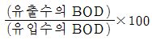
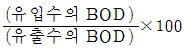
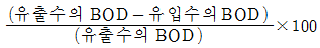
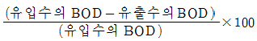
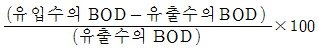
(정답률: 알수없음)
102. 샤워헤드의 최저 필요급수압력으로 적합한 것은? (단, 1MPa은 10kgf/cm2으로 함)
- 0.01 MPa
- 0.03 MPa
- 0.⑤ MPa
- 0.07 MPa
- 0.15 MPa
(정답률: 알수없음)
103. 급수설비 및 수질에 관한 설명으로 옳지 않은 것은?
- 극연수는 연관이나 황동관을 침식시킨다.
- 경도가 높은 물을 보일러 용수로 사용하면 스케일이 생성되어 전열효율을 감소시킨다.
- 수주분리란 관로에 관성력과 중력이 작용하여 물흐름이 끊기는 현상을 말한다.
- 공동현상(cavitation)은 유속이 큰 흐름을 급정지시킬 때 발생하는 현상이다.
- 고가수조방식은 수도직결방식과 비교하여 수질오염의 가능성이 크다.
(정답률: 28%)
104. 가스설비에 관한 설명으로 옳지 않은 것은?
- LPG 누출감지기는 바닥면으로부터 높이 0.3m 이내에 설치한다.
- 배관을 지하에 매설하는 경우에는 지면으로부터 0.5m 이내의 거리를 유지한다.
- 가스계량기는 전기개폐기로부터 0.6m 이상 이격하여 설치한다.
- LPG는 원래 무색무취하므로 냄새가 나는 물질을 넣어 사용한다.
- 건축물 내의 가스 배관은 노출하여 시공하는 것을 원칙으로 한다.
(정답률: 알수없음)
1⑤. 통기관에 관한 설명으로 옳지 않은 것은?
- 루프통기관은 기구배수관을 통하여 배수수평지관에 연결된 2～8개 기구의 통기를 한 개의 통기관으로 담당한다.
- 도피통기관은 배수수평지관의 최상류에 있는 기구배수관 바로 하류측에 세운 통기관이다.
- 결합통기관은 배수수직주관과 통기수직주관을 연결하는 통기관이다.
- 신정통기관은 배수수직관 상부에서 관경을 축소하지 않고 연장하여 대기 중에 개방하는 통기관이다.
- 습윤통기관은 배수와 통기의 역할을 겸한다.
(정답률: 알수없음)
106. 배수트랩에 관한 설명으로 옳은 것은?
- 트랩 봉수의 깊이는 일반적으로 5～10cm로 한다.
- 트랩의 목적은 배수의 흐름을 원활히 하기 위한 것이다.
- 트랩의 오버플로우 부근에 머리카락이나 헝겊이 걸린 경우에는 흡인작용에 의해 봉수가 파괴될 수 있다.
- 벨 트랩은 주방용 싱크나 소제용 싱크에 주로 사용된다.
- U 트랩은 배수수직주관에 사용된다.
(정답률: 30%)
107. 동관의 이음방법에 해당되지 않는 것은?
- 연납땜
- 경납땜
- 플래어이음
- 플랜지이음
- 프레스이음
(정답률: 알수없음)
108. 배관재료에 관한 설명으로 옳지 않은 것은?
- 스테인리스강관은 철에 크롬 등을 함유하여 만들어지기 때문에 강관에 비해 기계적 강도가 우수하다.
- 염화비닐관은 선팽창계수가 크므로 온도변화에 따른 신축에 유의해야 한다.
- 동관은 동일관경에서 K타입의 두께가 가장 얇다.
- 강관은 주철관에 비하여 부식되기 쉽다.
- 연관은 연성이 풍부하여 가공성이 우수하다.
(정답률: 47%)
109. 공조방식 중 전공기방식과 전수방식에 관한 설명으로 옳은 것은?
- 전공기방식은 외기냉방이 불가능하다.
- 전공기방식은 환기가 용이하다.
- 전공기방식은 실내에 수배관이 필요하다.
- 전수방식은 덕트 스페이스가 많이 소요된다.
- 전수방식은 고성능 필터를 사용할 수 있어 실내 공기의 청정도가 높다.
(정답률: 알수없음)
110. 옥내소화전설비의 위치를 표시하는 적색표시등의 설치기준으로 옳은 것은?
- 불빛은 부착면으로부터 15°이상의 범위 안에서 부착지점으로부터 10m 이내의 어느 곳에서도 쉽게 식별할 수 있어야 한다.
- 불빛은 부착면으로부터 20°이상의 범위 안에서 부착지점으로부터 15m 이내의 어느 곳에서도 쉽게 식별할 수 있어야 한다.
- 불빛은 부착면으로부터 25°이상의 범위 안에서 부착지점으로부터 20m 이내의 어느 곳에서도 쉽게 식별할 수 있어야 한다.
- 불빛은 부착면으로부터 30°이상의 범위 안에서 부착지점으로부터 25m 이내의 어느 곳에서도 쉽게 식별할 수 있어야 한다.
- 불빛은 부착면으로부터 45°이상의 범위 안에서 부착지점으로부터 30m 이내의 어느 곳에서도 쉽게 식별할 수 있어야 한다.
(정답률: 알수없음)
111. 소화활동설비에 해당되지 않는 것은?
- 제연설비
- 무선통신보조설비
- 연결송수관설비
- 비상콘센트설비
- 옥내소화전설비
(정답률: 46%)
112. 급탕설비에 관한 설명으로 옳은 것은?
- 급탕 배관시 상향공급방식에서는 급탕 수평주관은 앞올림 구배로 하고 복귀관은 앞내림 구배로 한다.
- 스팀 사일런서(steam silencer)는 가스 순간온수기의 소음을 줄이기 위해 사용한다.
- 팽창관과 팽창수조 사이에는 밸브를 설치하여야 한다.
- 중앙식 급탕공급방식에서 간접가열식은 직접가열식과 비교하여 열효율은 좋지만, 보일러에 공급되는 냉수로 인해 보일러 본체에 불균등한 신축이 생길 수 있다.
- 팽창관의 관경은 동결을 고려하여 20A 이상으로 하는 것이 바람직하다.
(정답률: 37%)
113. 난방설비에 관한 설명으로 옳은 것은?
- 증기난방은 증기의 현열을 이용하는 방식이다.
- 온수용 방열기의 표준방열량은 756W/m2(650kcal/m2h)이다.
- 증기난방은 부하변동에 따른 방열량 조절이 용이하다.
- 복사난방은 가열코일을 매설하므로 시공 및 수리가 어 렵다.
- 온풍난방은 온수난방과 비교하여 시스템 전체의 열용량이 크므로, 실온상승이 빠르다.
(정답률: 알수없음)
114. 바닥복사난방에 관한 설명으로 옳지 않은 것은?
- 실내 공기의 흐름이 적으므로 먼지의 비산이 거의 없다.
- 천장고가 높은 곳이나 외기침입이 있는 곳에서도 난방효과를 얻을 수 있다.
- 복사난방을 하는 공동주택의 층간 바닥은 법령이 정한 단열 성능을 확보하여야 한다.
- 방열면에서 열복사가 많으므로 낮은 실내 공기온도에도 쾌적감을 얻을 수 있다.
- 코일의 배치 간격이 넓을수록 방열면의 온도분포가 좋다.
(정답률: 알수없음)
115. 피뢰설비에 관한 설명으로 옳지 않은 것은?
- 높이 20m 이상의 건축물에는 피뢰설비를 설치한다.
- 피뢰설비의 보호등급은 한국산업규격에 따른다.
- 돌침은 건축물의 맨 윗부분으로부터 25cm 이상 돌출시켜 설치한다.
- 피뢰설비의 인하도선을 대신하여 철골조의 철골구조물과 철근콘크리트조의 철근구조체를 사용할 수 없다.
- 접지는 환경오염을 일으킬 수 있는 시공방법이나 화학 첨가물 등을 사용하지 않는다.
(정답률: 46%)
116. 전기설비의 금속관 배선공사에 관한 설명으로 옳지 않은 것은?
- 외부의 기계적 충격으로부터 전선의 손상이 적다.
- 전선에 이상이 생겼을 때 교체공사가 용이하다.
- 금속관 내에서는 전선에 접속점이 없도록 한다.
- 습기가 많은 장소에 사용할 수 있다.
- 증설공사가 쉬워 주로 대형건축물에 사용된다.
(정답률: 알수없음)
117. 승강기의 안전장치에 관한 설명으로 옳지 않은 것은?
- 조속기는 승강기가 과속했을 때 작동하는 안전장치이다.
- 스토핑 스위치는 최상층 및 최하층에서 승강기를 자동으로 정지시킨다.
- 완충기는 승강기가 사고로 인하여 하강할 경우 승강로 바닥과의 충격을 완화하기 위해 설치한다.
- 전자브레이크는 전동기의 토크 손실이 있을 때 승강기를 정지시킨다.
- 리밋 스위치는 승강기 문 또는 승강장 문이 조금만 열려도 승강기를 정지시킨다.
(정답률: 알수없음)
118. 공동주택의 거실에서 시간당 0.7회의 환기횟수로 환기설비를 가동할 경우 예상되는 실내 CO2농도는? (단, 거실의 면적 100m2, 천장고 2.5m, 1인당 CO2 방출량 0.02m3/h, 재실인원 4인, 외기 CO2 농도 350ppm)
- 약 7⑤ppm
- 약 745ppm
- 약 807ppm
- 약 857ppm
- 약 910ppm
(정답률: 10%)
119. 냉동기에 관한 설명으로 옳지 않은 것은?
- 흡수식 냉동기는 냉매로 브롬화리튬(LiBr), 흡수제로 물(H2O)을 사용한다.
- 압축식 냉동기는 흡수식 냉동기와 비교하여 많은 전력을 소비한다.
- 압축식 냉동기와 흡수식 냉동기에서 냉수의 냉각이 이루어지는 부분은 증발기이다.
- 압축식 냉동기의 4대 구성요소는 압축기, 증발기, 응축기, 팽창밸브이다.
- 흡수식 냉동기의 4대 구성요소는 재생기, 증발기, 응축기, 흡수기이다.
(정답률: 30%)
120. 홈네트워크 설비에 관한 설명으로 옳지 않은 것은?
- 취사용 가스밸브제어기가 여러 개인 경우에는 이를 통합 제어할 수 있어야 한다.
- 월패드에서 원격제어되는 조명제어기와 난방제어기는 수동으로 조작하는 스위치를 설치하지 아니한다.
- 동체감지기는 유효감지반경을 고려하여 설치하여야 한다.
- 각 세대별 원격검침장치는 운용시스템의 동작 불능시에도 계속 동작이 가능하도록 하여야 한다.
- 세대내 홈네트워크설비에는 정전시 예비전원이 공급될 수 있도록 하여야 한다.
(정답률: 알수없음)